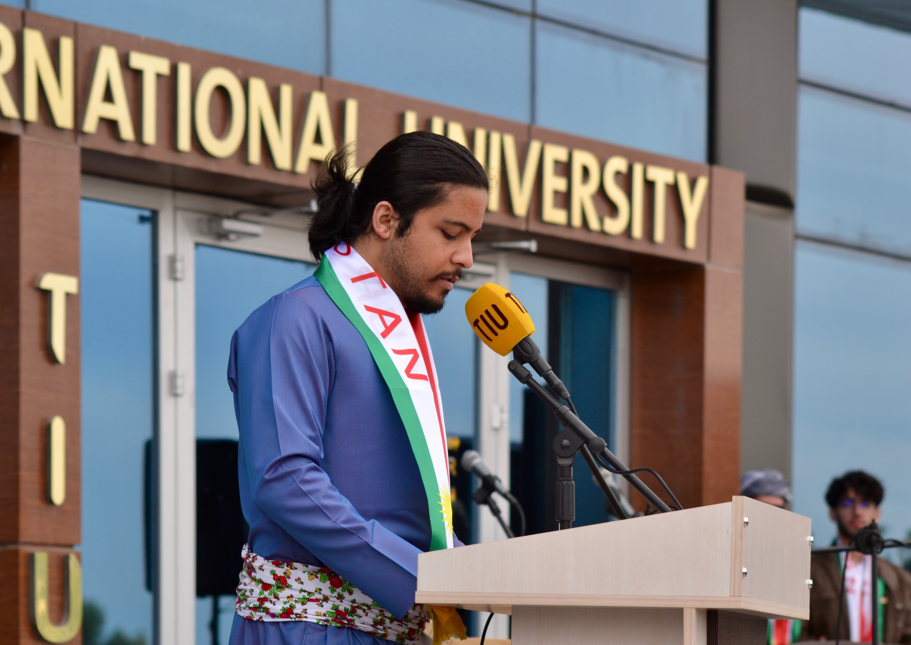

Shazad Hassan Babakr - Hosting at TIU

Full Stack Mobile Application Developer | Multimedia Creator
CTO, Coordinator & Organizer of KSTIU
As a dedicated, top-performing Computer Education student at Tishk International University, I humbly blend a deep passion for full-stack software development with a strong creative background in multimedia storytelling. I strive to bridge technical complexity with user-centric visual design, drawing on my enriching experiences leading Kurdistan Students Talks (KSTIU) and my active role as the official host for major university events.
My journey includes invaluable international experience through programs with DAAD and Brandenburg, leading to an awarded project at a conference in Cyprus, as well as an upcoming exchange semester at Universiti Teknologi Malaysia (UTM). Currently taking on a multifaceted professional role at ZAS TECH KRD, I am eager to contribute my diverse skill set to create impactful solutions while remaining grounded and open to continuous industry growth.
ZAS TECH KRD | June 2026 - Present
Kurdcinema & Shafilm | 2024 - Present
Continuous learning and community involvement are the foundations of my professional journey. From advanced negotiation training with the American Council to debate leadership and cultural heritage digitization, I am dedicated to expanding my capabilities beyond the code.
Engineered a comprehensive Flutter/Dart mobile application utilizing QR code technology and robust offline capabilities to solve complex university monitorization needs.
Collaboratively developed an advanced, offline AI model integrated into a mobile framework, successfully pushing the boundaries of accessible technology.
Designed the full frontend UI/UX and architected the backend infrastructure to establish a robust digital presence for the university's largest student organization.
Architected a GUI-based desktop application utilizing Java OOP principles and MySQL Workbench to seamlessly manage and secure complex relational financial data.